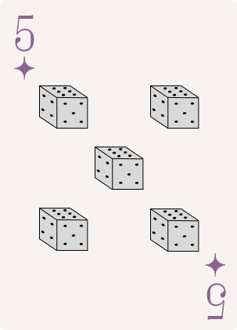

Past Portfolios

This is the portfolio I created during my junior year! It showcases some of the projects I've worked on, the skills I've developed, and how I've grown throughout the year.
Python Practice

This was my very first attempt at Python programming ever! I used input statements to ask the user for their name and favorite food, stored their responses in variables, and printed them out. It was my first time experimenting with user input and variables.
Skills: Python
This program uses numbers and special characters to create two cats! I challenged myself to experiment with spacing and character placement to make the cats actually recognizable. It was a fun little exercise in formatting.
Skills: Python
This program acts as a basic calculator where the user inputs two numbers and gets the results of different mathematical operations. I practiced using variables and arithmetic operators to perform calculations.
Skills: Python
This program calculates the area of a rectangle using variables to store its dimensions. It was a simple way to practice using mathematical formulas in Python and working with numbers.
Skills: Python
This program calculates how much money the user has based on the values they input. I practiced storing numbers in variables and using calculations to find a final amount.
Skills: Python
This is another calculator, but with a twist! The program asks the user for a number, randomly generates another, and performs calculations using both. It was my first time experimenting with random numbers.
Skills: Python
This program checks whether the user's input follows certain conditions, such as being a four-digit number or starting with a vowel. I practiced using conditional statements to determine whether different inputs met specific requirements.
Skills: Python
This was my first time using a for loop! I experimented with using loops to print out numbers instead of writing individual print statements for each one.
Skills: Python
This is another program using a for loop, but this time I experimented with printing decimal numbers. I wanted to see how changing the values in my loop would affect its output.
Skills: Python
This program prints out the lyrics to "99 Bottles of Beer on the Wall" using a for loop. It was a fun way to experiment with loops and see how they could automate repetitive tasks.
Skills: Python
This was my first experience drawing with Python! I created a smiley face by plotting individual points on a canvas. It was interesting to see how I could use code to create something visual.
Skills: Python
This is another smiley face, but this time I used lines instead of points! I experimented with connecting different coordinates to create the features of my drawing.
Skills: Python
For this assignment, I created another smiley face using polygons. I experimented with connecting different points to form shapes and create a recognizable drawing.
Skills: Python
This was my final smiley face, made entirely with circles! After experimenting with points, lines, and polygons, I got to explore another way of drawing shapes in Python.
Skills: Python